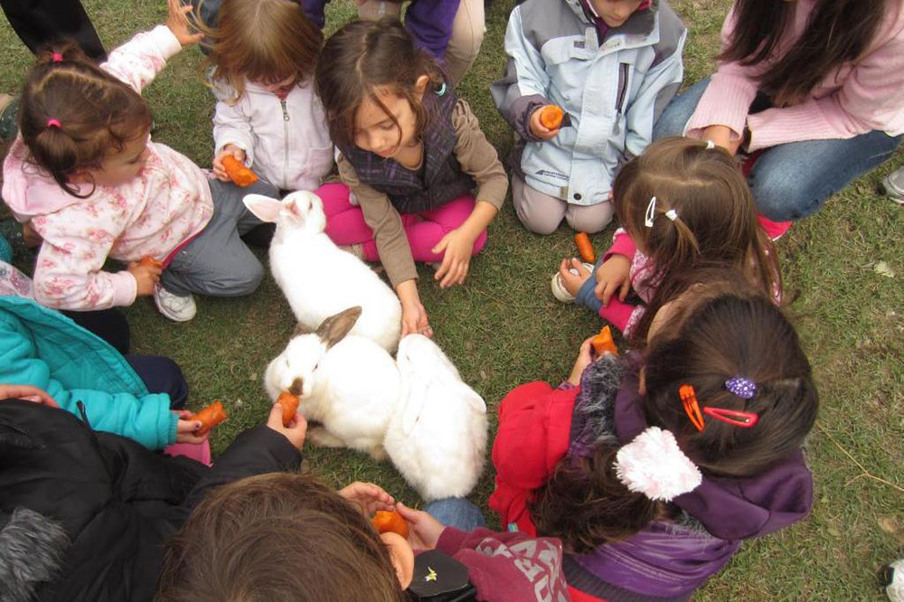
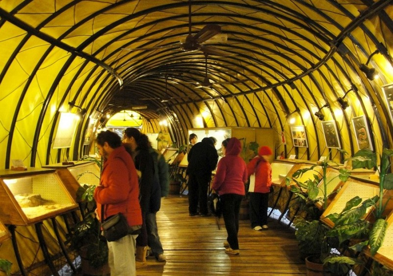

Elige tu actividad
Cabaña Caprina Los Cerros
Mendoza se caracteriza por sus paisajes deslumbrantes. El aire libre ayuda a mantener nuestros niveles de estres estables, además de los paisajes agradables a la vista que suman riqueza al momento transcurrido. Poder pasar un día de calidad en contacto con la naturaleza y algunos animales que serán la atracción de los más niños además, se puede disfrutar de una rica comida elaborada por especialistas y amenos juegos de granja que seguramente, les harán pasar un día maravilloso junto a la familia. Los animales de granja son el atractivo del lugar y junto a los y las más pequeños/as se puede disfrutar de su compañia.
Olavarria 4940 Pedriel, Lujan de Cuyo, Mendoza, Argentina.
Los penitentes
Los Penitentes cuenta con juegos de nieve, donde el esquí pasa a segundo plano e invita a los niños a disfrutar de paseos en trineo y tubbing, con gomones especiales deslizándose por las colinas de nieve.
A casi 190 kilómetros de la ciudad de Mendoza se ubica el centro de esquí Los Penitentes.
Serpentario de Mendoza
Los animales son un gran atractivo para los niños y niñas en época de vacaciones. Es completamente insusual poder observar especies exoticas en un lugar atípico pero esto es posible en el serpentario de la ciudad de Mendoza. Podrán descubrir y asombrarse con diferentes especies de serpientes (la mayoría son exóticas), algunos impresionantes reptiles, arácnidos e incluso, escorpiones que merecen ser vistas por todas las personas que se apasionan por el mundo animal y para que los niños descubran y se maravillen con estas especies.
Ituzaingó 1420, 5525 Capital, Mendoza. Horario: 09:00 a.m. a 19:00 p.m. (lunes a domingo).